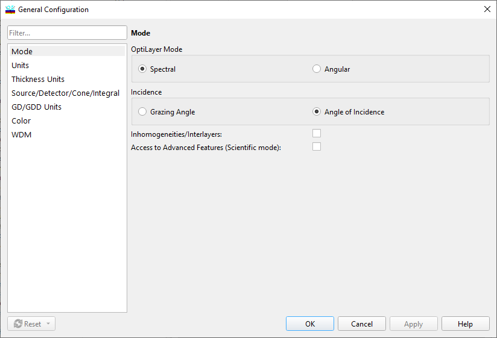

Data Display Modes
Data Display Modes
Navigation: OptiLayer Menu Commands > Configuration Menu >
Data Display Modes
` <idh_configuration.html>`__ ` <idh_menu_configuration.html>`__ ` <idh_config_units.html>`__
OptiLayer can represent data arranged by wavelength or by angle of incidence. This choice corresponds to the Spectral and Angular data display modes, respectively. The choice of modes, spectral or angular, may be made on the Mode page of the Configuration dialog.

In the Spectral mode, all Target spreadsheets are arranged in pages where each page corresponds to a specific angle of incidence and contains data for different wavelengths.
In the Angular mode, all Target spreadsheets are arranged in pages where each page corresponds to a certain wavelength and contains data for different angles of incidence.
The choice of a display mode also affects the way coating characteristics are plotted.
In the Spectral mode, the function argument is the wavelength, and different curves correspond to different angles of incidence.
In the Angular mode, the function argument is the angle of incidence, and different curves correspond to different wavelengths.
Due to this difference, the functionality of some editing tools is appropriately modified. For example, when editing a Target file in the Spectral mode, you can modify the number of angles of incidence with the Angles button (accessible from the Edit menu). In the Angular mode, the Angles button is replaced with the Wavelengths button, with similar functionality.
The current setting of the display mode is shown in the General Information window that is accessible from the View menu.
You can switch between Angular and Spectral modes using the Configuration Options menu. In most graphic windows, you can click the right mouse button to access the pop-up menu to switch between modes. When you switch between modes, the data representation is changed automatically throughout all OptiLayer windows. Additionally, it is possible to select a different convention for light incidence presentation. It can be expressed as Angle of Incidence measured from the normal to the coating, or as a Grazing Angle measured from the coating surface. Grazing angle presentation is more commonly used in EUV and X-ray applications. Inhomogeneities/Interlayers option activates a special mode of OptiLayer for studying the effect of bulk inhomogeneities in the coating layers or/and the effect of interlayers between coating layers (appearing as the result of inter-diffusion or surface roughness). Access to Advanced Features (Scientific mode) checkbox controls the availability of commands normally not visible even in the Expert mode.

Note: Scientific options are used for the further development of the software and algorithms. They can be unstable, and the results should be verified additionally. Use these options only if you are an expert!